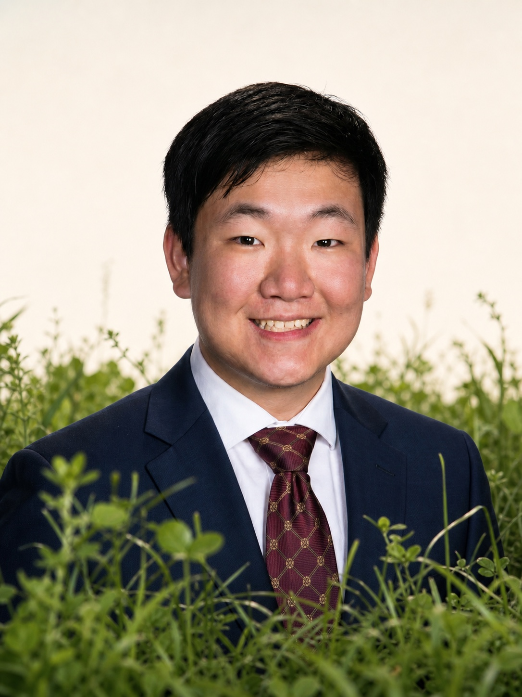

Portrait · Field notes
Waterloo, ON · Vancouver, BC · Available Jan 2027
Civil engineering student working the seam between field practice and software — envelope thermal modelling, deep foundations on the Ontario Line, MTO pavement QC, and the tools that make those teams faster.
Behind this card is an empty site. Scroll to break ground — the tower goes up twelve storeys, and every few lifts a marker opens a chapter: education in the foundations, the resume in the frame.
BASc Civil · Waterloo '28
GPA 4.0 / 4.0
4 co-op terms
Python · SQL · MATLAB
Awaiting notice to proceed